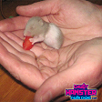

|
Thuyết phục bố mẹ cho phép bạn được nuôi một bé Hamster. Bạn đang lên kế hoạch nuôi một bé Hamster đáng yêu? Bạn đã có những dự định tuyệt vời với bé Hamster mình sẽ có trong tương lai? Công việc bây giờ chỉ còn là cố gắng thuyết phục cha mẹ của bạn cho phép bạn được nuôi ít nhất 1 bé Hamster. |
|
Làm thế nào để chăm sóc cho Hamster mang thai của bạn. Nếu bạn có một bé hamster đang mang thai, bạn sẽ cần phải chăm sóc đặc biệt cho nó để đảm bảo rằng có thể sinh sản một cách khoẻ mạnh. Kiểm tra lồng nuôi, thức ăn và quá trình sinh nở . |
|
Hướng dẫn cách chăm sóc hamster hàng ngày Chuột hamster là con vật rất đáng yêu và cũng rất dễ nuôi, mình sẽ tổng hợp lại các bước nuôi, chăm sóc hamster hàng ngày cho các bạn mới làm quen. |
|
Phong trào nuôi và hâm mộ chuột Hamster tại Việt Nam và thế giới. Không chỉ các bạn tuổi teen, học sinh, sinh viên, mà những bạn đã đi làm và cả các bậc phụ huynh nữa đều yêu thích chú chuột nhỏ dễ thương này... |
|
Chuột Hamster bản chất là loài vật sạch sẽ, không mang mầm bệnh và không gây nguy hại cho con người. Nhờ các đặc tính sinh học ổn định, sạch bệnh đó mà chuột Hamster được nghiên cứu, mang lại nhiều cống hiến lớn cho khoa học. |
|
Nguồn gốc, quê hương của chuột Hamster. Vào năm 1839, trong báo cáo của nhà động vật học người Anh, George Waterhous đã tìm được một con hamster cái già ở Syria... |